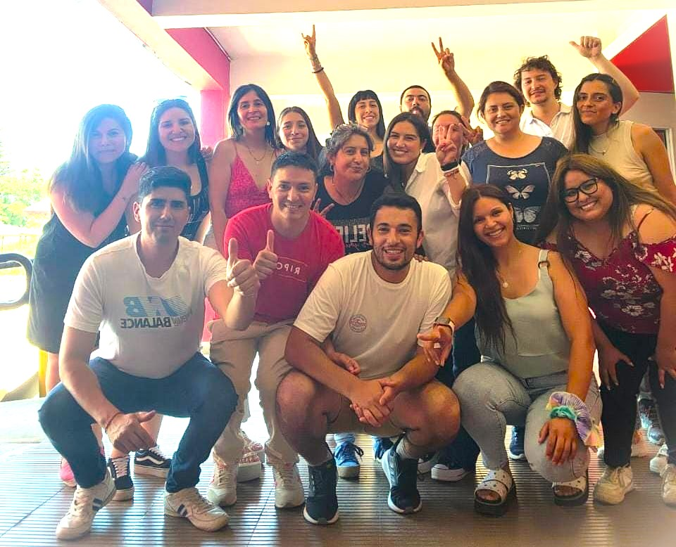

En TastyPets estamos comprometidos con el bienestar de tu mascota
Nuestra Historia
Fundada en el año 2025, TastyPets se enorgullece de ser la distribuidora líder en la región de O'Higgins, especializándonos en la venta y distribución de alimentos premium y superpremium para mascotas, con un enfoque especial en perros. Nuestra historia comienza con una pareja de fundadores, cuyo amor y dedicación por sus propios perritos les llevó a crear una empresa que reflejara esos mismos valores hacia todas las mascotas.
En TastyPets, creemos que el amor por nuestras mascotas es fundamental. Es por eso que cada producto que seleccionamos y distribuimos pasa por un riguroso proceso de selección, asegurándonos de ofrecer solo lo mejor en nutrición y cuidado. Entendemos que una alimentación de calidad es esencial para el bienestar y la salud de nuestras mascotas, y nos comprometemos a proporcionar opciones que cumplan con los más altos estándares de calidad.

Nuestro Equipo
Pedro Benítez Castro

Carolina Herrera Labrín
Nuestra Familia
Nuestro Compromiso
Salud Animal:
Nos comprometemos a garantizar la salud y bienestar de las mascotas mediante productos nutritivos y equilibrados.Calidad sin Límites:
Vendemos productos de primera calidad y aplicamos estrictos estándares de control para asegurar productos excepcionales y seguros.Sostenibilidad Ambienta: l
Adoptamos prácticas sostenibles en todas las etapas del negocio, minimizando nuestro impacto ambiental.Transparencia y Honestidad:
Proporcionamos información clara y honesta sobre ingredientes y procesos para construir confianza con los dueños de mascotas.Innovación Constante:
Nos esforzamos por estar a la vanguardia de la industria, explorando nuevas tecnologías y tendencias en la nutrición animal.Testimonios o Reseñas
"Los productos de TastyPets transformaron la salud de mi perro. ¡Nunca antes lo había visto tan enérgico y feliz!"
Alan Brito Delgado
"La calidad es excepcional. Mi perro es exigente, y con TastyPets encontré la elección perfecta que le encanta."
Elba Zurita
"La transparencia en los ingredientes me encanta. TastyPets es una empresa en la que confío para el bienestar de mi mascota."
Andrés Trozado
"La innovación de productos es evidente. Siempre a la vanguardia de la nutrición animal, ¡mi perro y yo somos fans leales!"
Lola Mento